História do Time
O Boston Celtics é uma franquia de basquete da NBA, sediada em
Boston, Massachusetts.
Fundado em 6 de junho de 1946, é uma das equipes mais antigas da liga.
Propriedade da Boston Basketball Partners LLC.
Joga no TD Garden, ginásio compartilhado com o time de hóquei Boston Bruins (NHL).
Detém 18 títulos da NBA, sendo o maior campeão da história da liga.
O apelido “Celtics” e o mascote “Lucky the Leprechaun” homenageiam a grande população irlandesa de
Boston.
Períodos de Domínio e Lendas
Considerado um dos maiores times da história do basquete.
Dominou a NBA entre 1957 e 1969, conquistando 11 títulos em 13 anos.
Entre 1959 e 1966, venceu 8 campeonatos consecutivos — recorde até hoje nos EUA.
Jogadores lendários como Bill Russell, John Havlicek, Bob Cousy e Larry Bird, além do técnico Red
Auerbach, fizeram história.
Na temporada regular, acumula um recorde de 795 vitórias e 397 derrotas.
Nos anos 1980, o famoso “Big Three” (Larry Bird, Kevin McHale e Robert Parish) conquistou 3 campeonatos.
Renovação e Sucesso Recente
Em 2007-08, após 22 anos sem título, a franquia contratou Ray Allen e Kevin Garnett para formar o novo
“Big Three” com Paul Pierce.
O trio conquistou o título contra o Los Angeles Lakers, seu maior rival, contra quem os Celtics têm
vantagem de 9-3 em finais.
Quatro jogadores Celtics ganharam o prêmio de MVP da NBA: Bill Russell, Bob Cousy, Dave Cowens e Larry
Bird.
Elenco Atual
| Nome | Posição | Idade | Altura | Peso | Universidade | Salário |
|---|---|---|---|---|---|---|
| Jaylen Brown | SG | 28 | 1.98 m | 101 kg | Califórnia | $49,205,800 |
| Torrey Craig | SF | 34 | 1.96 m | 100 kg | South Carolina Upstate | $2,845,342 |
| Luka Garza | C | 26 | 2.08 m | 110 kg | Iowa | $2,162,606 |
| Hugo Gonzalez | G | 19 | 1.98 m | 92 kg | -- | -- |
| Sam Hauser | SF | 27 | 2.01 m | 98 kg | Virginia | $2,092,344 |
| Al Horford | #### | #### | #### | #### | #### | #### |
| Josh Minott | A | 22 | 2.03 m | 92 kg | Memphis | $2,019,699 |
| Miles Norris | A | 25 | 2.01 m | 99 kg | UC Santa Barbara | -- |
| Georges Niang | SF | 32 | 2.01 m | 104 kg | Iowa State | $8,500,000 |
| Payton Pritchard | PG | 27 | 1.85 m | 88 kg | Oregon | $6,696,429 |
| Neemias Queta | C | 26 | 2.13 m | 112 kg | Utah State | $2,162,606 |
| Baylor Scheierman | A | 24 | 1.98 m | 92 kg | Creighton | $2,494,320 |
| Max Shulga | G | 23 | 1.96 m | 95 kg | VCU | -- |
| Anfernee Simons | SG | 26 | 1.91 m | 90 kg | -- | $25,892,857 |
| Jayson Tatum | SF | 27 | 2.03 m | 95 kg | Duke | $34,848,340 |
| Xavier Tillman | A | 26 | 2.01 m | 111 kg | Michigan State | $2,237,691 |
| Jordan Walsh | G | 21 | 1.98 m | 92 kg | Arkansas | $1,891,857 |
| Derrick White | PG | 31 | 1.93 m | 86 kg | Colorado | $20,017,429 |
| Amari Williams | C | 23 | 2.13 m | 118 kg | Kentucky | -- |
Títulos e Conquistas
O Boston Celtics é uma das franquias mais vitoriosas da história da NBA. Seu legado é marcado por décadas
de conquistas, grandes jogadores e uma base de fãs apaixonada.
Títulos da NBA
17 Campeonatos da NBA:
Década de 1950: 1957
Década de 1960 (dominância histórica com 8 títulos consecutivos):
1959, 1960, 1961, 1962, 1963, 1964, 1965, 1966
Outros títulos:
1968, 1969, 1974, 1976, 1981, 1984, 1986, 2008
Os Celtics estão empatados com o Los Angeles Lakers como os maiores campeões da NBA (17 títulos cada até
2024).
Títulos de Conferência Leste (NBA Finals
Appearances)
22 vezes campeões da Conferência Leste:
Destaques: 1957 a 1966 (10 finais seguidas), 1981, 1984, 1985, 1986, 1987, 2008, 2010, 2022
Título de divisão (Atlantic Division)
33 títulos de divisão (maior marca da NBA):
Incluem as décadas de 1950, 1960, 1970, 1980 e anos recentes como 2008, 2010, 2011, 2012, 2017, 2022,
2024
Curiosidades
O nome Celtics foi escolhido em 1946 para homenagear a herança irlandesa de Boston, uma cidade com forte
influência da cultura celta.
O trevo (shamrock) no logotipo também é um símbolo típico da Irlanda.
Mascote Lucky the Leprechaun
O mascote oficial é o Lucky the Leprechaun, um duende irlandês que representa sorte, tradição e carisma
do time.
Ele aparece em jogos fazendo acrobacias e interagindo com a torcida.
Domínio Histórico
Entre 1959 e 1966, os Celtics venceram 8 campeonatos consecutivos — um feito inédito na NBA até hoje.
Liderados por Red Auerbach e Bill Russell, criaram uma verdadeira dinastia.
Primeiro Técnico Afro-Americano
Em 1966, Bill Russell se tornou o primeiro técnico negro da NBA, enquanto ainda atuava como jogador dos
Celtics. Um marco histórico no esporte americano.
Rivalidade com os Lakers
A rivalidade com o Los Angeles Lakers é a mais famosa da NBA. Já se enfrentaram em 12 finais, com os
Celtics levando vantagem na maioria.
A Mística do TD Garden
O ginásio atual, TD Garden, é considerado um dos mais difíceis para os adversários jogarem, pela
atmosfera intensa da torcida.
O antigo ginásio Boston Garden (1928–1995) era conhecido por seu piso de madeira "desnivelado", o que
ajudava os Celtics a manter vantagem em casa.
Lendas Eternas
Jogadores como Bill Russell, Larry Bird, Paul Pierce e Kevin Garnett fazem parte do Hall da Fama e são
ícones eternos da franquia.
O número 6 de Bill Russell foi aposentado por toda a NBA em 2022, após sua morte, como homenagem ao seu
legado dentro e fora das quadras.

 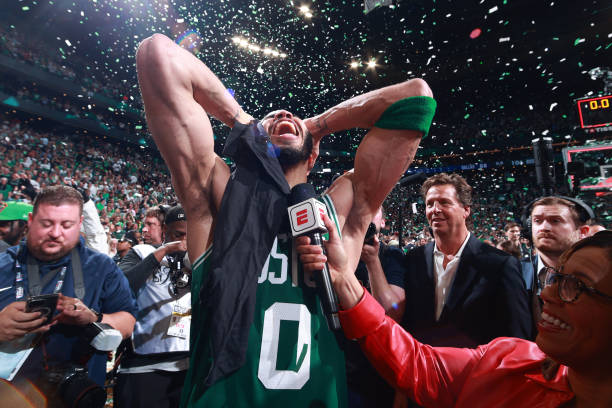
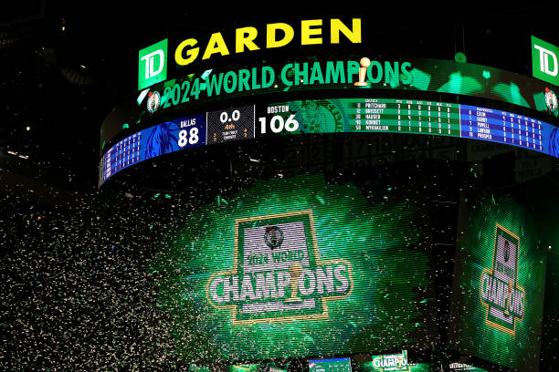
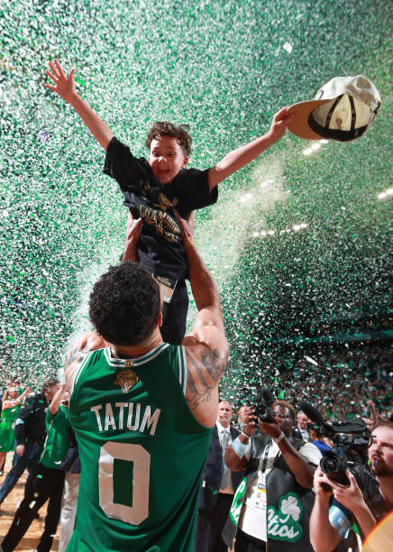
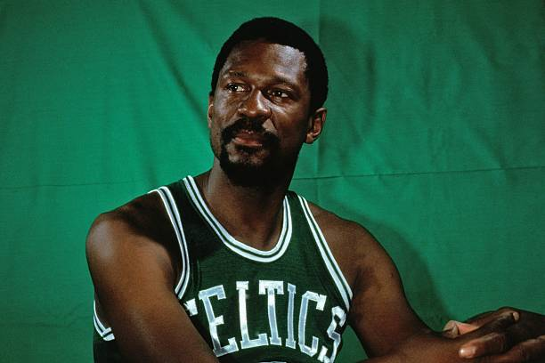
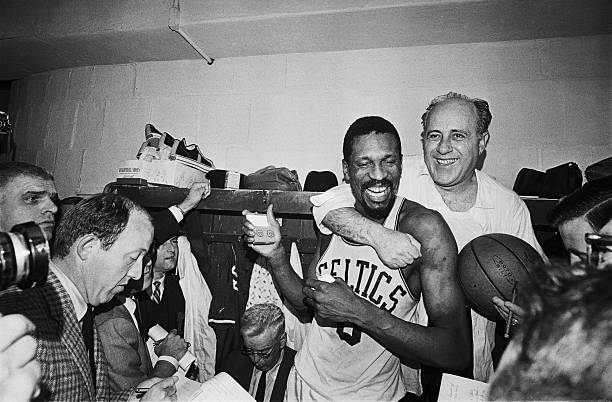
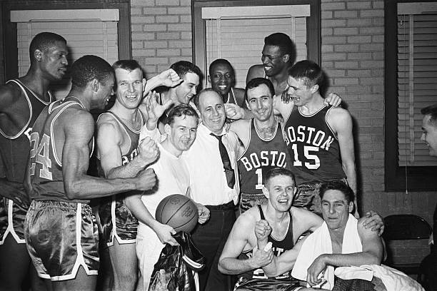
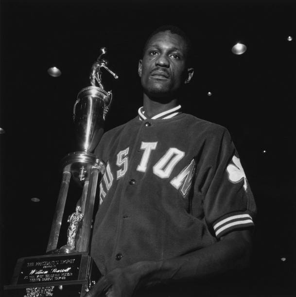
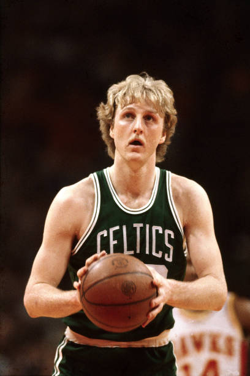
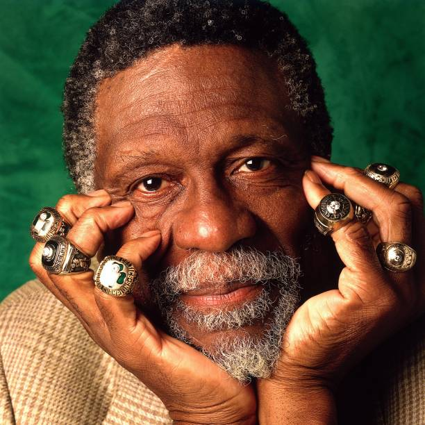
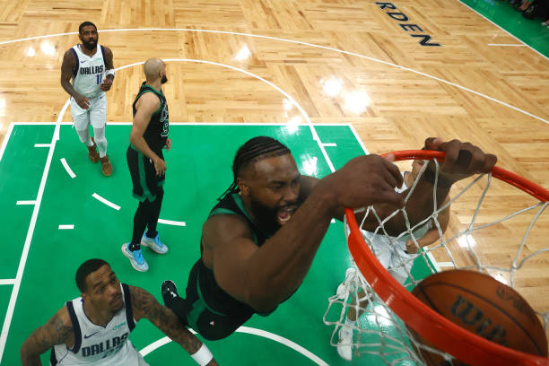
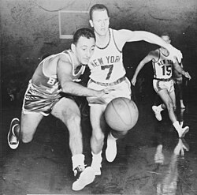
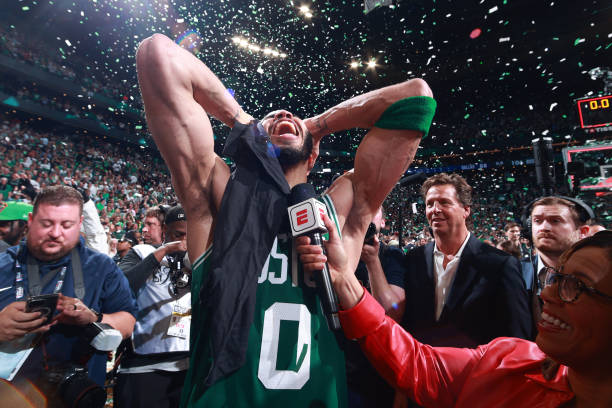
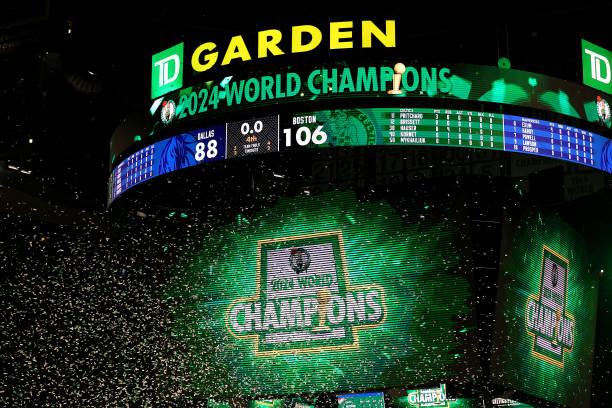
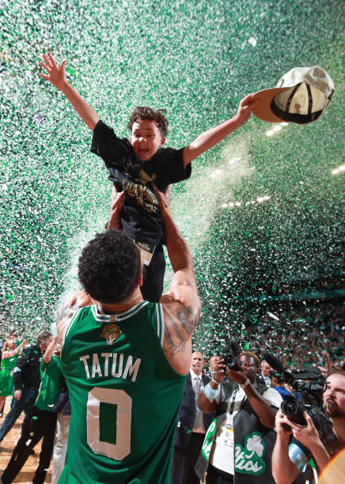
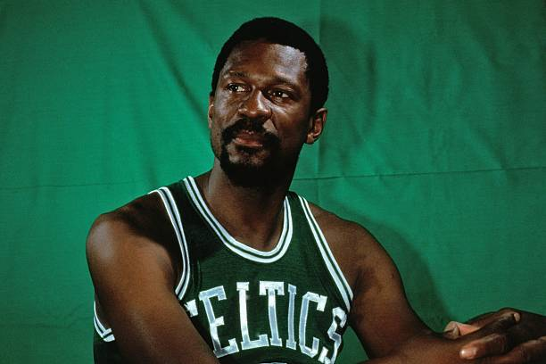
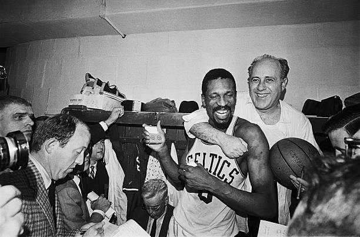
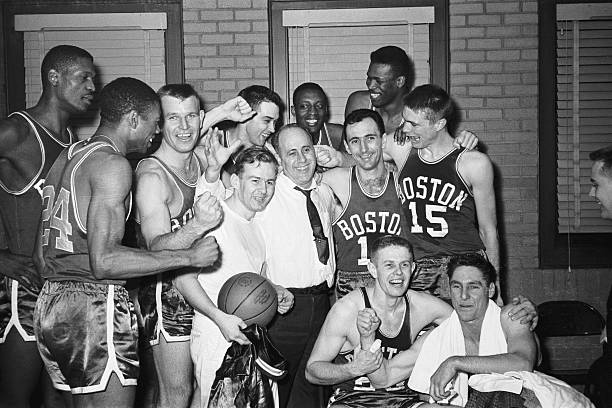
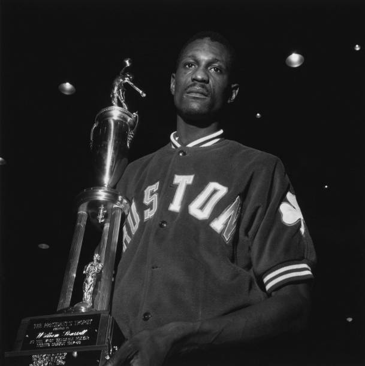
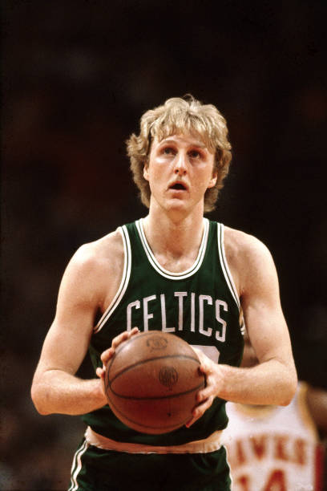
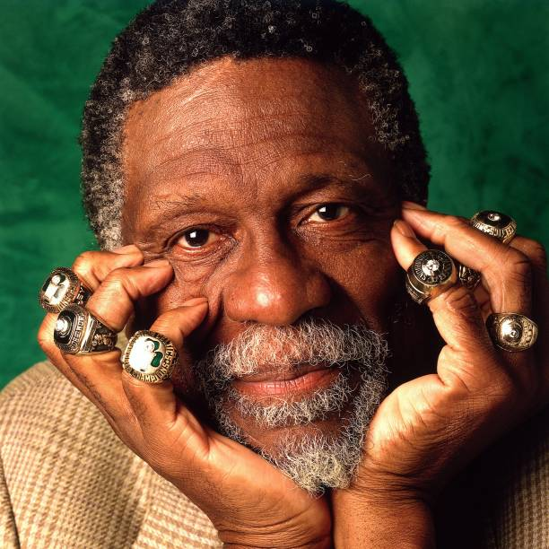
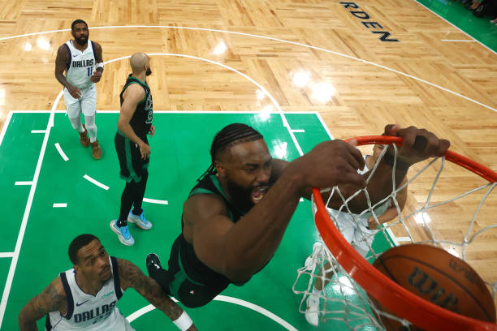
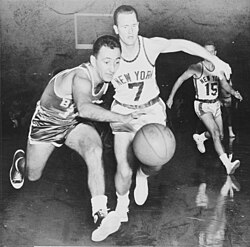